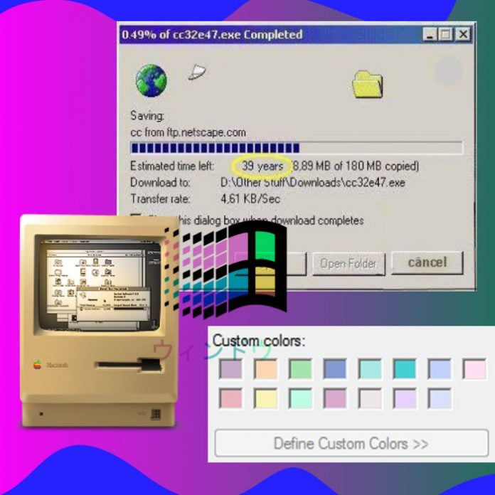
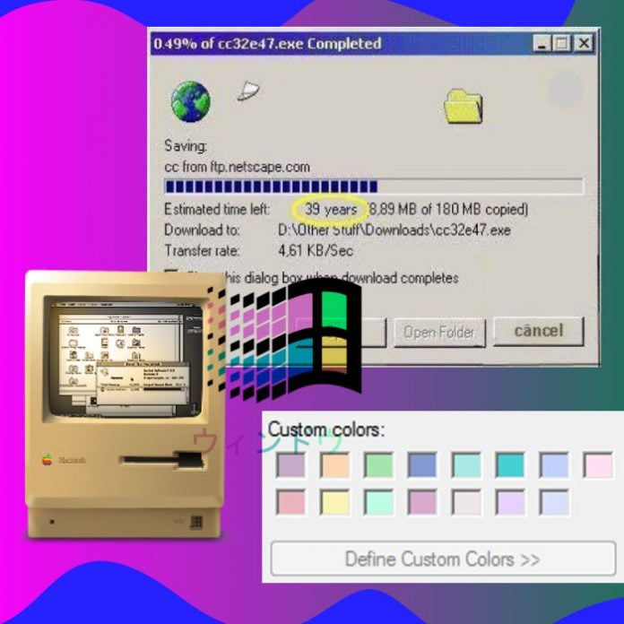
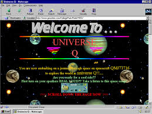
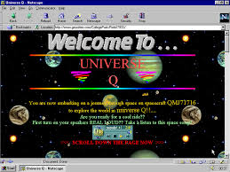
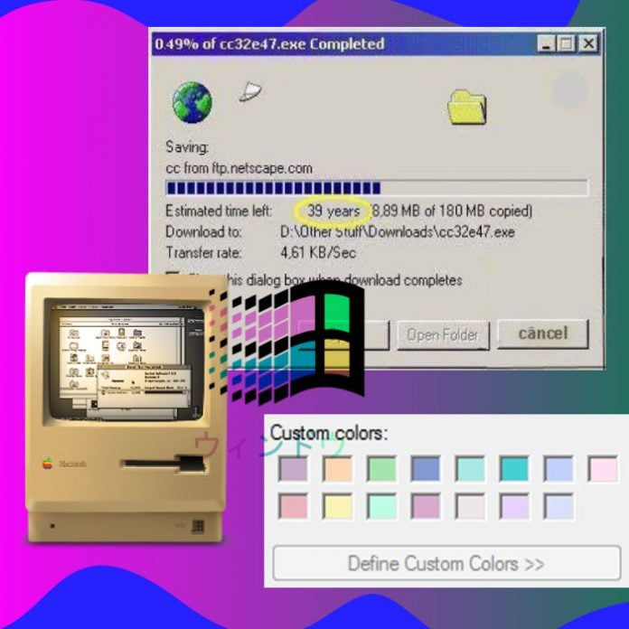
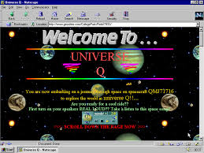

Imagenes de la Guerra Fría


 


 

Fue un conflicto por la supremacía del mundo y la imposición del modelo político, económico, ideológico y cultural que cada país defendía: el comunismo (URSS) y el capitalismo (EE. UU.).
Ver Más



A partir de los años 60's surge ARPA, la Agencia de Proyectos de Investigación Avanzada, una iniciativa del Departamento de Defensa de los Estados Unidos que tenía entre sus objetivos la creación de una red de computadoras capaz de comunicar usuarios en distintas computadoras.

El primer correo electrónico fue enviado por el ingeniero informático Raymond Tomlinson en 1971 y decía “algo así como QWERTYUIOP”, según sus propias palabras. Nada épico ni memorable. Es que en aquel entonces Tomlinson no tomó dimensión de la relevancia que cobraría su invención.

fue desarrollado para un proyecto patrocinado por el ARPA (Estados Unidos). Aunque TCP/IP es un conjunto de protocolos, los que les dan nombre al conjunto son Transmission Control Protocol (TCP) e Internet Protocol (IP).
Tim Berners-Lee escribió la primera propuesta para la World Wide Web en marzo de 1989 y su segunda propuesta en mayo de 1990. Junto con el ingeniero de sistemas belga Robert Cailliau, esto se formalizó como una propuesta de gestión en noviembre de 1990. Desarrolló el código de su servidor web en un ordenador NeXT. 12 de noviembre de 1990: Tim Berners-Lee propone crear la World Wide Web. El británico Tim Berners-Lee desarrolló la World Wide Web para mejorar la comunicación entre los científicos del CERN, en Suiza, creando un servidor y un buscador que permitían acceder y compartir información desde ordenadores distintos.

20 de diciembre de 1990, Berners-Lee puso en línea la primera página web del mundo: http://info.cern.ch/hypertext/WWW/TheProject.html, que contiene información y anécdotas sobre el surgimiento de las páginas web. Fue el nacimiento de la World Wide Web, Tim Berners-Lee está considerado su creador

Con la llegada de internet a gobiernos, universidades y grandes empresas, surgió Mosaic, el segundo navegador web gráfico disponible para sitios web. Fue creado en el Centro Nacional de Aplicaciones de Supercomputación (NCSA), en la Universidad de Illinois Urbana-Champaign, y diseñado por Marc Andreessen

Yahoo, fundado en 1994 por Jerry Yang y David Filo, comenzó como un directorio de sitios web, evolucionando rápidamente hacia un portal web que ofrecía una amplia gama de servicios: noticias, correo electrónico, búsqueda y más.

Brendan Eich desarrolló JavaScript mientras trabajaba en Netscape Communications Corporation. La primera versión del lenguaje se llamaba "Mocha" y luego fue renombrada a "LiveScript" antes de adoptar el nombre "JavaScript". Fue lanzado oficialmente en diciembre de 1995 como parte de Netscape Navigator 2.0.

Internet Explorer (anteriormente Microsoft Internet Explorer y Windows Internet Explorer, usualmente abreviado a IE) es una serie descontinuada de navegadores web gráficos desarrollado por Microsoft para el sistema operativo Microsoft Windows desde 1995.
Håkon Wium Lie y Bert Bos propusieron la idea de CSS en una conferencia web. CSS se desarrolló como una forma de separar la estructura del contenido HTML de su presentación visual. La especificación CSS1 se publicó en diciembre de 1996.

La primera versión de Google fue lanzada en agosto de 1996, en una página web propiedad de Stanford (google.stanford.edu). Era un proyecto tan colosal que utilizaba casi la mitad del ancho de banda de la red de la universidad. Finalmente, en septiembre de 1997 registraron el dominio google.com.